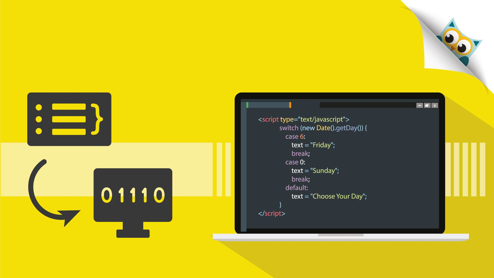

[TRANSLATOR]
- Dalam konteks bahasa pemrograman, "translator" biasanya merujuk kepada program atau perangkat lunak yang mengubah kode sumber dari satu bahasa pemrograman ke bahasa pemrograman lain. Ini biasanya dilakukan untuk beberapa tujuan seperti portabilitas, optimisasi, atau integrasi.
- Ada 2 jenis translator utama pada bahasa pemrograman, yaitu Compiler dan Interpreter.

A. Compiler
Compiler adalah jenis translator yang menerjemahkan seluruh kode sumber dalam satu kali proses ke dalam bahasa mesin atau kode antara (intermediate code). Compiler menghasilkan file biner atau kode antara yang dapat dieksekusi secara langsung oleh komputer. Contoh bahasa yang menggunakan compiler adalah C, C++, dll.
Fase Pada Compiler
1. Fase analisis
• Lexical analyzer yang membagi program dalam bentuk “token”.• Syntax analyzer, berfungsi mengenali “kalimat” dalam program menggunaka sintaks Bahasa
• Semantic analyzer, bertugas memeriksa semantik statis dari setiap konstruksi.
• Intermediate code generator, yaitu generator menghasilkan kode “abstrak”.
2. Fase Sintesis
• Code optimizer, bertugas mengoptimasi kode abstrak yang dihasilkan intermediate code generator.• Code generator, yang menerjemahkan kode dari intermediate code generator menjadi instruksi mesin yang spesifik.
B. Interpreter
Interpreter adalah jenis translator yang membaca dan mengeksekusi kode sumber baris demi baris saat program berjalan. Ini berarti kode sumber tidak diterjemahkan ke dalam bahasa mesin atau kode antara sebelum dieksekusi. Contoh bahasa yang menggunakan interpreter adalah Python, JavaScript, dan Ruby.
LINKER
• Tugas dari linker adalah menggabungkan berbagai library external dengan object file untuk menghasilkan sebuah program. kode program C biasanya butuh file library external. Sebagai contoh, untuk menampilkan teks ke layar dalam bahasa C perintahnya adalah printf(“Hello World”). Untuk bisa memproses perintah printf(), C butuh sebuah file external, yakni stdio.h.
• Linker-lah yang akan menggabungkan hello_world.obj dengan stdio.h. Hasil akhirnya berupa sebuah program berextension *.exe. Karena file source code saya buat sebagai hello_world.c, file programnya akan bernama hello_world.exe. Dengan mendouble klik file hello_world.exe, program kita sudah langsung berjalan.
Kembali!